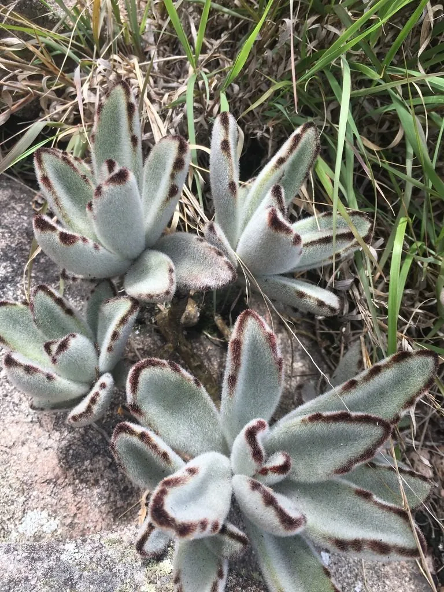

多肉植物 · 植物界
月兔耳 Kalanchoe tomentosa

景天科伽蓝菜属多肉，叶片密生银白色绒毛，叶缘有褐色斑点，形似兔耳，原产马达加斯加，是手感独特的观叶多肉。
- 分类
- 门被子植物门纲木兰纲目虎耳草目科景天科属伽蓝菜属
- 栖息环境
- 马达加斯加干旱地区的石质坡地与灌丛
- 地理分布
- 原产马达加斯加，世界各地盆栽观赏
- 保护级别
- 暂无评估
物种志
月兔耳为景天科伽蓝菜属的多年生肉质草本，株高 30–60 厘米，茎直立，叶片对生，长圆形或披针形，长 5–8 厘米，肥厚，表面密生银白色绒毛，叶缘有褐色或红褐色斑点，形似兔耳。花为圆锥花序，花小、黄绿色，花期夏季；果实为蓇葖果。
月兔耳原产马达加斯加的干旱地区，喜阳光充足、温暖干燥和通风良好的环境，耐旱、怕积水和低温。它叶片密生白毛、叶缘带褐斑，手感柔软，形似兔耳，是伽蓝菜属中著名的观叶多肉。栽培用排水良好的颗粒土，生长期干透浇透，浇水时避免淋湿叶面，冬季保持 10℃ 以上；繁殖以叶插和枝插为主，成活容易。
形态与习性
- 株高30–60 厘米
- 叶片长圆形，密生银白色绒毛
- 花期夏季，花小、黄绿色
- 光照喜充足光照，夏季遮阴
- 水分耐旱，干透浇透，勿淋叶面
- 土壤排水良好的颗粒土
- 繁殖叶插、枝插
- 特点叶缘褐斑，形似兔耳
趣味知识
- 月兔耳的叶片密生银白色绒毛，摸起来柔软，形似兔耳。
- 叶缘的褐色斑点是它的标志，光照充足时颜色更深。
- 浇水时避免淋湿叶面，否则绒毛间积水容易腐烂。